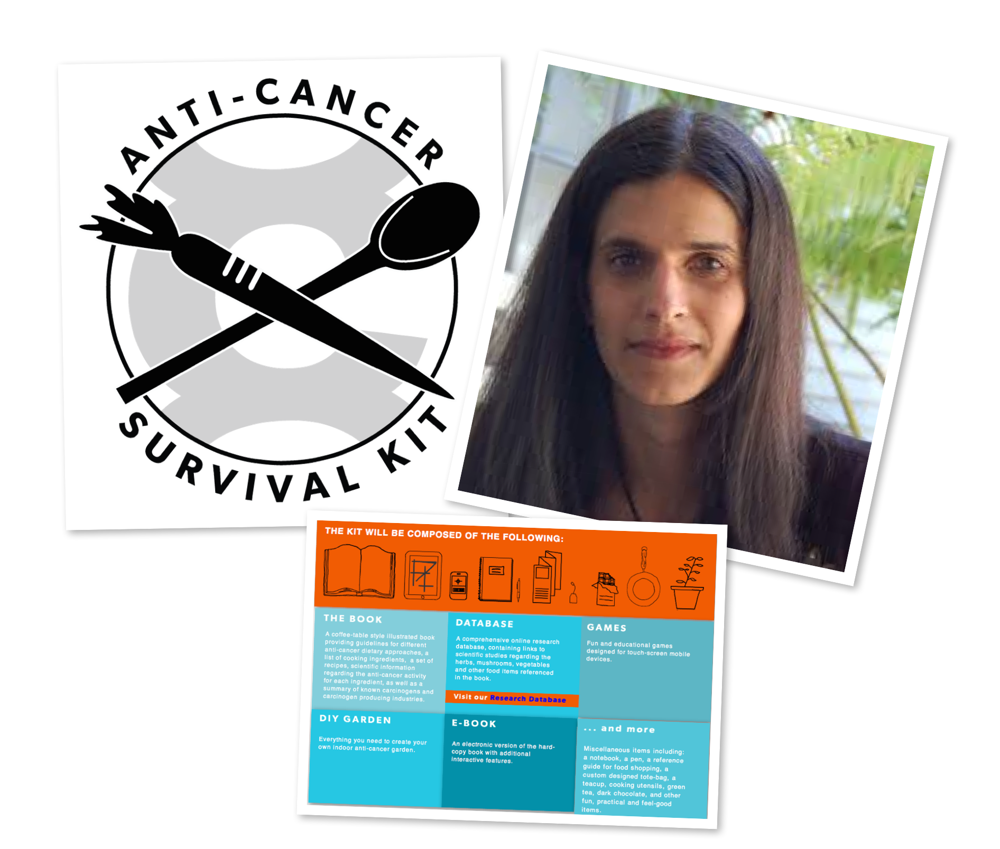

Overview
The Invisible Fury is an interactive documentary that examines the effects of the “battle” language associated with cancer care. The aim of the documentary is to provide a centralized database that contains personal accounts of people’s experiences with cancer and its associated infrastructures.
Rewatch the video introduction.
Our Intention
The project scope is to unpack the battle rhetoric associated with cancer. The rhetoric of “invasion,” “cancer battle” and “survivorship” have negative psychological and emotional consequences for patients. This aggressive language victimizes and compounds the challenges of those facing cancer or those that have gone through cancer and “lost.” The project aim is to unpack these consequences of the warfare language through two discursive categories of “Fury” and “Invisibility.” The “Fury” corresponds to topics of cellular multiplication and bodily manipulation. The “Invisibility” corresponds to issues of the confounding nature of cancer and its associated paradoxes of research, prevention, and treatment. Sub-items of invisibility also include the very active online support communities that are created by anonymous users.
The implications of this project are to give space to more cancer retrospectives that are not anonymous and to contest the “battle” language. This project further contributes to research in public education of how cancer operates socially. The Invisible Fury Project also contributes to research in the digital arts in creating a curated platform for illness narratives.
JANA BOLOTIN (conception and creative direction) is a filmmaker and media artist. Her works include animation, autobiography and commercial documentary. Jana’s autobiographical film, Alo! 86th Street has been officially selected by the Olympia Film Festival, the Tacoma Film Festival and Seattle’s Local Sightings Film Festival. Professionally, Jana has worked as an associate producer in nonfiction television for A&E and the Biography Channel. She is also the co-producer of the United States of Football, a feature length documentary about the long-term neurological effects of playing football. Jana is currently pursuing an MFA in Digital Arts + New Media from UC Santa Cruz.
SARAH HARMON (co-production, programming, and creative direction) is a scientist, engineer and human researcher. Her projects are largely interdisciplinary, spanning fields from molecular biology to mathematical neuroscience. Sarah is currently pursuing her PhD in computer science at UC Santa Cruz.
I met Lora Maggini by sheer luck. I took a hospital elevator to the 5th floor of the San Francisco medical library. The library archives are nestled in a small private room that requires special entry through a buzzer. I confirmed my appointment and was admitted through the intercom. Upon entry I was greeted by a young librarian who immediately inspected my bag, instructed me to wash my hands, and provided me with a pair of gloves for handling these precious materials.
I was struck by this protocol, by the authority of the archives, and the authority of the physical location in which they reside. The archives produce a sort of contradicted power that is both transparent and concealed.
The medical case study of Mrs. Maggini offers a similar interpretation of both intrigue and Question.
Upon finding her photographs in Dr. Brighman’s file, it is evident that Mrs. Maggini was a stunning woman. In Brigham’s descriptions, he notes she had a strong heart and and lungs, a clear complexion with a good deal of color in her cheeks. She’s is described as being Italian American, 66 year old, and classified as a “victim of cancer.” What’s unique about Mrs. Maggini is that she is the first patient in the United States that survived the full removal of her stomach, and lived well after the procedure. Her operation was performed on February 24th, 1898 by Dr. Charles Brooks Brigman at St. Lukes Hospital in SF.
Her files indicate that she consented to the procedure, but she did not know the exact character of what she was consenting. Before and After the procedure, she was not aware that she was A. missing a stomach, and, B. that she had a malignancy. This lack of disclosure warrants a somewhat patronizing approach to patient care. How could she not know that her stomach was going to be removed? Why didn’t the doctor disclose this information? Upon further investigation of her files, Dr. Brigman actually provided Mrs. Maggini with immense care and attention. He noted that the patient was not worried about herself. All she wished for was to be restored to good health; how this was to be accomplished she never asked.
His note from November 10th, 1900, states the following:
Mrs. Maggini continue in remarkably good health; her appetite has been than usual during this past summer. She invariably eats during the night, waking up to partake of either strawberries or Oysters with bread and butter. She goes to the market daily, stopping at the church on her way home; her day is well occupied with housekeeping and visits to her family and friends. The fact of her having operated upon has ceased to have any influence on the performance of her daily activities. Her weight is present at 114 lbs.
The note is very descriptive, prepared with a lot of care and detail towards Mrs. Maggini.
Her case study prompts an exploration of doctor-patient roles—roles that have drastically shifted in the 20th century. As doctors became more therapeutically potent with advances in medicine and antibiotics, they tended to forget the psychological significance and the benefits of the close and trusting relationship that patients expected. Even though Maggini’s case study indicated that it was an experimental and radical procedure for its time period, there was an impressive level care for the patient. Perhaps Brigham’s omission was a protective gesture for Mrs. Maggini?
In her book, Illness As Metaphor, Susan Sontag notes that in France and Italy it is still the rule for doctors to communicate a cancer diagnosis to the patient’s family but not to the patient; doctors consider that the truth will be intolerable to all but exceptionally mature and intelligent patients. In America, in part because of the doctor’s fear of malpractice suits--there is a now much more candor with patients, but the country’s largest cancer hospital mails routine communications and bills to outpatients in envelopes that do not reveal the sender, on the assumption that the illness may be a secret from their families.
This grapple with cancer metaphor, language, disclosure and patient/doctor dynamics, which led to the creation of this project, The Invisible Fury.
WomenCARE is "a safe haven where women with any type of cancer find mutual support, shared experiences, and open hearts." On their website, you can learn how about free services and support, as well as how to volunteer and help women with cancer and their families.
The Anti-Cancer Survival Kit is a project developed collaboratively with recently deceased Beatriz da Costa, Robert Nideffer, Pamela Jane Mendoza, Johnny Lu, Frank Peter, Jamie Schulte, and Donald Daedalus. The Kit is designed for, in Beatriz’s words, “people living with cancer, their family and friends, and those who never wish to get cancer in the first place.” The Kit seeks to expose hidden relationships between human subjects and the “medical industrial complex.” Beatriz began compiling a database of scientific research during her own personal struggle with cancer. She observed that significant funding for cancer research focuses on “early detection,” almost none on cancer prevention.
As Beatriz stated herself (from Crys Moore):
Environmental conditions such as exposure to carcinogens and lifestyle are the leading factors in cancer development, yet very little is being done to change these conditions. Public education is practically non-existent on these issues, forcing citizens to protect themselves, and to resist societal pressures that lead towards unhealthy lifestyles. This impulse is at the crux of the Anti-Cancer Survival Kit, understanding how cancer operates scientifically, socially, and how these discourses intersect in personal experience.
This project is supported by a generous Florence French Financial Aid Fund for Art.